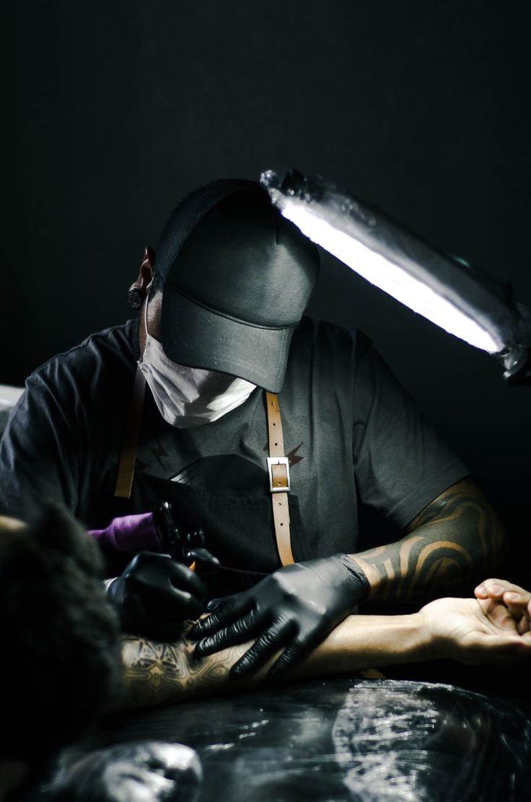

Les Règles d'Hygiène

Le Respect strict des règles d'hygiène dans nos salons de tatouage est notre priorité absolue,
garantissant une expérience sûre et saine pour nos clients.
Chaque artiste suit des protocoles rigoureux, désinfectant méticuleusement les surfaces de travail avant
et après chaque séance.
Les instruments sont stérilisés conformément aux normes industrielles.
Nos artistes portent des équipements de protection individuelle, tels que gants et masques, pour
prévenir toute contamination croisée.
Les clients peuvent être assurés que les aiguilles et l'encre utilisées sont de la plus haute qualité,
exemptes de tout risque de transmission d'infections.
La santé de nos clients et de notre équipe est notre priorité!!!
Nos artistes portent des équipements de protection individuelle, tels que gants et masques, pour prévenir toute contamination croisée.
Les clients peuvent être assurés que les aiguilles et l'encre utilisées sont de la plus haute qualité, exemptes de tout risque de transmission d'infections.
La santé de nos clients et de notre équipe est notre priorité!!!



.jpg)
.jpg)
.jpg)
Pour toutes questions, Contactez-Nous!